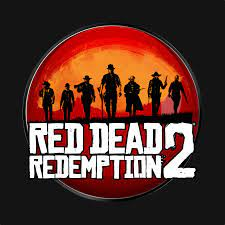
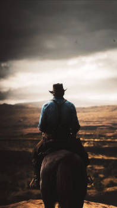

Red Dead Redemption 2 é um jogo eletrônico de ação-aventura desenvolvido e publicado pela Rockstar Games. É o terceiro título da série Red Dead e uma prequela de Red Dead Redemption, tendo sido lançado em outubro de 2018 para PlayStation 4 e Xbox One e em novembro de 2019 para Microsoft Windows e Google Stadia.
O jogo mais íncrivel que você vai ver em relação a história e gráficos, claro se voce gosta de faroeste.
Já falei que esse jogo é muito bonito?
Se esse jogo fosse RPG ele seria jogo para 10 anos, pois você pode caçar, pescar, ser um caçador de recompensas, um assaltante, um cobrador de dívidas, um ladrão de cavalos, e muito mais
A história gira em torno de Arthur Morgan e seu "mentor" Dutch
Em algumas situações você precisa livrar a cara do safado Micah, um cara que só dá call errada, eu costumo chamá-lo de Bernardo.
Eu gosto do Lenny, um cara tranquilo, humilde, parceiro de gole. Diferente do Bernardo.
Com gráficos incríveis e paisagens encantadoras, é impossível não ficar jogando Red Dead Redemption 2 por horas.
Já falei que esse jogo é lindo?
As missões principais contam um história por vezes dramáticas, e outras tantas engraçadas, mas além de tudo, cenas de ação, inteligência e muita bala e chapéus voando.
